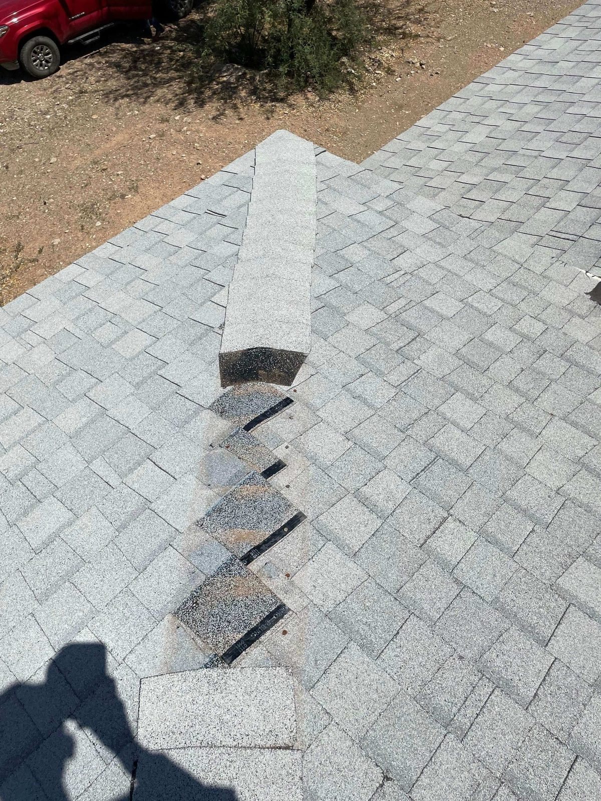

Storm Damage Roof Repair · Tucson, AZ
Storm Damage Roof Repair in Tucson
Leak after a storm? Wind got under your tile? Call and we come out, tarp it so the water stops, and photograph every bit of the damage for your claim. Tucson, Marana, Oro Valley, Vail, Sahuarita and Green Valley.
- Emergency tarping
- Monsoon, wind & hail damage
- Documented for your insurance claim
- Licensed & insured · ROC #358079
Storm Response
Leak after the storm? Let's get it stopped today.
A monsoon rolls through, the wind gets under a tile or peels back a piece of flashing, and by the time you notice it there's water coming through the ceiling. That's the call I get twenty times a season.
Tarp it, document it, fix it. In that order. The tarp protects your house right now, the photos protect you when you file, and the repair is what keeps you from doing this again next August.
- Same-day emergency tarping
- Monsoon, wind & hail damage
- Dated photos for your claim
- Permanent repair, not just a patch
Fast After a Storm
Active leaks and blown-open roofs go to the top of the schedule.
Tarped & Stopped
Emergency tarping that holds until we can do the permanent repair right.
Claim Documentation
Dated photos, a written scope, and we'll meet your adjuster on the roof.
Know What You're Looking At
What storm damage looks like on a Tucson roof
Most of it doesn't look like a hole. After a monsoon blows through, the damage is small and quiet — a tile that slid two inches, a flashing edge the wind got under, a coating that split at a seam. You won't see any of that from the driveway. You'll see it three weeks later as a brown ring spreading across the ceiling.
Here's what I'm up there checking for after a storm.
First 24 Hours
Tarping, and why it can't wait
A tarp isn't the repair. It's the tourniquet. The whole point is stopping water before it soaks your insulation and drops your ceiling, because drywall, paint and insulation usually cost more to put back than the roof work does.
We tarp it properly — fastened and sealed at the edges, not a blue sheet held down with two bricks that'll be in your neighbor's yard by the next gust. Then we come back and do the permanent fix once the weather lets us.
- Same-day emergency tarping
- Leak traced back to the real source
- Interior protected before it spreads
- Permanent repair scheduled, not forgotten
Insurance Claims
We document it. Your carrier decides.
Let me be straight with you, because the storm-chaser crews working your street this week won't be: I can't tell you whether your claim gets approved. I don't work for your insurance company, and neither does anybody knocking on your door promising you a brand new roof. What your policy covers is between you and your carrier.
What I can do is hand your adjuster a file that's hard to argue with. Dated photos, wide shots and close-ups, where the damage sits on the roof, what caused it, and what it takes to fix. If your adjuster wants to walk the roof, I'll meet them up there and we'll go over it together.
- Dated photo documentation, inside and out
- Written scope of the damage
- We meet your adjuster on site
- Itemized repair estimate for the file
Who Shows Up
You call, you get Eddie
This is a family business. My wife Viky and I run it, roofing is the trade our family works in, and I've been on Tucson roofs for more than 20 years. No commission reps, no closers. The guy who looks at your roof is the guy doing the work on it.
Licensed and insured, Arizona ROC #358079, GAF Certified+. After a big storm, half the trucks in town have a magnet sign and an out-of-state plate. We'll still be here next monsoon season, and the season after that. I won't put anything up there I wouldn't put on my own house.
- Family-owned — Eddie & Viky Guillen
- Arizona ROC #358079, licensed & insured
- GAF Certified+ contractor
- 20+ years on Tucson roofs
Related Guides
Storm damage & insurance guides
After a monsoon, these are the questions people ask us: what's covered, what to do first, and why a cracked tile can't sit until next season.
Are storm leaks covered by homeowners insurance? What to do in the first hours after roof damage Why monsoon-broken roof tiles need fixing fast Getting a flat roof ready for monsoon season
Service Area
Where we respond after a storm
A monsoon cell doesn't hit the whole valley the same. Wherever it caught you, we cover it.
Tucson
Midtown, east side, west side and everything in between.
Marana
Wide-open ground out here, so wind damage hits harder.
Oro Valley
Tile roofs and steep pitches — our everyday work.
Casas Adobes
Older roofs with underlayment that's already tired.
Catalina Foothills
Foothills storms come off the mountain hard and fast.
Vail
Vail and Corona de Tucson, same response.
Sahuarita
Newer builds still lose tile and flashing in a blow.
Green Valley
Flat and low-slope roofs where water likes to sit.
How It Works
How Storm Response Works
Call or Text
Reach us at 520-753-1758 and tell me what you're seeing. Water coming inside goes to the front of the line.
We Get Out and Look
Free storm-damage inspection. I go up on the roof, into the attic if I need to, and I show you the photos.
Stop the Water
Emergency tarping and leak control, same visit when the roof is actively letting rain in.
Document the Damage
Dated photos, a written scope and an itemized estimate you can hand straight to your adjuster.
Repair It for Real
Tile reset, flashing rebuilt, underlayment replaced, coating patched — whatever the roof actually needs.
From a real inspection
Severe hail damage on a Tucson roof
An Owens Corning Shasta White shingle roof after a severe hailstorm on the northwest side. Impact craters across the field, the kind of damage that is invisible from the ground.
FAQ
Storm Damage Questions, Answered
Still wondering about something? Call us at 520-753-1758 — straight answers, no pressure.
Ask Us DirectlyThere's water coming through my ceiling right now. What do I do?
Move whatever's under it and get a bucket down. If the ceiling is bulging with trapped water and you can reach it safely from a step ladder, a small hole in the middle lets it drain in one spot instead of coming down all at once. Then call us. Don't climb up on a wet roof to look — that's how people get hurt, and it's our job anyway.
Do you tarp the same day?
If the roof is actively leaking, that's the plan. Call early in the day if you can. During a bad monsoon week we're stacked up, but live water inside somebody's house jumps ahead of everything else on the schedule.
How do I get insurance to pay for roof replacement after a storm?
I honestly can't tell you. That's your carrier's call and it comes down to your policy, your deductible and what the adjuster finds. Anybody who tells you over the phone that you're getting a new roof out of it is guessing. What I do is document the damage properly and work with your adjuster — the decision is theirs, not mine.
What's in the documentation you give my adjuster?
Dated photos: wide shots of the whole roof, close-ups of every damaged area, and interior shots of the ceiling or wall damage. Then a written scope of what's wrong and an itemized estimate to repair it. If your adjuster wants to walk the roof with me, I'll be there.
What does hail damage look like on a roof?
You usually can't see it from the ground. Slipped tile, a lifted flashing edge, a split in a coating — they all look like nothing from the driveway and every one of them leaks. After a hard blow, have somebody get up there and look. It takes me under an hour.
Do you charge for the storm damage inspection?
No. Free inspection, you get the photos either way, and you get a straight answer. If your roof came through the storm fine, I'll tell you it came through fine. I'd rather you call me in five years when you actually need something.
Is this a temporary fix or a real repair?
Both, in that order. The tarp is temporary and it's there to protect the house. The repair is the real one — tile reset on new underlayment, flashing rebuilt, seams redone. We schedule it once the weather clears and the scope is settled.
Storm hit your roof? Let's get it stopped.
Call or text 520-753-1758. We'll tarp it, document it and fix it right — Tucson, Marana, Oro Valley, Vail, Sahuarita and Green Valley.
Let's Talk
Let's Take a Look at Your Roof
Tell me what's going on up there — a leak, storm damage, an old roof that's seen better days, or a full replacement — and we'll get you on the books for a free inspection.